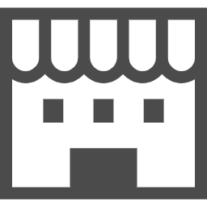

論理的思考力を鍛えよう
〜ロジカルシンキング学習サイト〜
論理的思考力を鍛えよう
〜ロジカルシンキング学習サイト〜
ロジカルシンキングについて、ペンギンくんとウサギちゃんがふくろう先生に教わるようです。
まずはロジカルシンキングの必要性を理解しましょう。
ウサギちゃん
コンサルティングファームを目指してる人だけが勉强するんでしょ？
ペンギンくん
じゃあ僕には関係無いや〜
ふくろう先生
そんなことは無いぞ！ロジカルシンキングは全ての人に役立つスキルだよ。
ふくろう先生が言うように、ロジカルシンキングは全ての人にとって非常に有益であり、特に社会人は必須で学ぶべきスキルです。
ロジカルシンキングで得られるメリットは次のとおりです。
＜ロジカルシンキングを学ぶメリット＞
このサイトでは、例題を通じてロジカルシンキングを分かりやすく説明します。
ペンギンくんたちと一緒にロジカルシンキングを学んでいきましょう！
ふくろう先生
ロジカルシンキングを鍛えるには、実際にケースワークを考えてみるのが良いんだ。まずは例題を解いていこう！
【例題】
都内にあるサイゼリヤ全店舗の総売上を増やす方法を考えよ。
ただし、期間や売上目標値はここでは定めない。
ウサギちゃん
うおん。全然わかんないよ〜
初めてケースワークを解く人は、ウサギちゃんと同じくちんぷんかんぷんですよね。
まずはケースワークを解く３つのSTEPを理解しましょう。アイコンをクリックして、各STEPの説明を読んでください。
【ケースワークを解く３STEP】
STEP1：現状分析
STEP2：課題特定
STEP3：打手検討
現状分析
課題を解決するためには、まずは現時点の状況を分析しなくては始まりません。
物事は必ず複数の要因で成り立っているので、その要因を網羅的に切り分け、それぞれについて検討する必要があります。これが現状分析です。
例えば恋人が欲しいと相談を受けたときは、「オシャレな服を買え」とか「合コンに行け」といった断片的なアドバイスは有用ではありません。
まずは恋人を作る要因を「外見・内面・出会いの数」という３つの要素に切り分け、網羅的に要因を検討する（すなわち現状分析する）ことが大切です。
補足ですが、要素を切り分けることを「構造化」と呼び、その際に抜け漏れが無い様を「MECE」と呼びます。ロジカルシンキングを勉強する際は必ず出てくる単語なので、頭に入れておきましょう。
課題特定
現状の分析が完了したら、課題（ボトルネック）を特定します。
先程の「恋人が欲しい」という相談を例に取ると、例えば相談者がマッチングアプリに３つ登録して、かつ毎週合コンに参加している場合、出会いの数は問題なさそうですね。
この場合、ボトルネックは「外見・内面」のどちらかだと特定できます。
なお、ここでは分かりやすさを重視して「外見・内面・出会いの数」という３つの観点でしか検討していませんが、実際には外見を「内的要因（容姿/スタイル/髪型など自分の体に準ずる要素）」「外的要因（ファッション/アクセサリー/香水など身に纏う要素）」に分けるなど、更に細分化して考えることが出来ます。
より具体的な課題を特定するためには、STEP1で詳細かつ網羅的に現状分析することが大切です。
打手検討
最後に、特定したボトルネックに対して効果的な打ち手を検討します。
まずはボトルネックに対して複数の打ち手を考え、それらを「実現可能性」及び「効果」の２側面から評価します。
先ほどと同様「恋人を作りたい」という相談を例に、打ち手策を評価してみましょう。
例えば「整形して容姿を整える」という打ち手はどうでしょうか？効果は高そうですが、金銭面や価値観から実現可能性は低そうですね。
逆に「オシャレな時計を買う」という打ち手は、実現可能性は高いものの、効果のほどはあまり期待できそうにありませんね。
このように打ち手を検討する際はボトルネックに対して「実現可能性・効果」の２つの観点で検討することが重要です。
ペンギンくん
取り組む方法はなんとなく理解したけど、実際に解ける自信が無いです...
ふくろう先生
まずは解く流れを理解すれば大丈夫だぞ。具体的な考え方は一緒に問題を解きながら学んでいこう！
早速「都内サイゼリヤの全店舗売上」を要素分解してみましょう。
分解方法はいくつかありますが、客数と単価で分解すると以下の式のようになります。
この式はよく使うので覚えてしまいましょう。
売上＝店舗数 × １店舗当たりの客数 × 客単価 × リピート率
多くの人はここでストップしてしまうのですが、もう一歩踏み込んで考えてみましょう。
上記の要素の中で、さらに分解できる要素が複数あります。どれか分かりますか？
ふくろう先生
どのように分解できるかも一緒に考えてみよう！
さらに分解できる要素をクリックしてください。
A. 店舗数
B. １店舗当たりの客数
C. 客単価
D. リピート率
正解です！
都内の店舗数は「23区内/23区外」や「テナント店/路面店」等に分解できます。
正解です！
1店舗当たりの客数は「座席数 × 1時間あたりの回転率 × 営業時間」や
「平日/休日・朝/昼/晩」のように時間帯・曜日別に分解することが出来ます。
正解です！
客単価は「テイクアウト + イートイン」「注文数量 × 商品単価」「ドリンク + フード」等に分解できます。
残念...
リピート率はこれ以上分解することは難しいです。もう一度考えてみましょう。
３つの要素は更に細分化可能でしたね。しっかり正解できたでしょうか？
売上の要素分解は非常によく使う考え方なので、しっかり使いこなせるようにしましょう！
補足
網羅的に現状分析する方法として、今回説明した「要素分解」の他に「フレームワークの活用」「時系列で検討」「対照概念で分解する」という手段もあります。これらは練習問題で説明します。
それでは、上記３つの要素を更に分解して、現状分析をしましょう！...言いたいところですが、さすがに議論が複雑になりすぎます。
簡略化のため、「1店舗当たりの客数」のみ細分化して、他の要素はそのまま分析しましょう。
ふくろう先生
まずは細分化しない「店舗数・客単価・リピート率」を分析してみよう。
ペンギンくん
都内では至るところにサイゼリヤがあるから、店舗数は充分ですね。
ウサギちゃん
学生やカフェ代わりに使う主婦が多いから、客単価は低そうです。
ペンギンくん
安くて美味しくて全国展開してるお店なので、リピート率は高そうですね。
ふくろう先生
二人とも良い分析が出来ているぞ！続いて客数を「昼・夕方・夜」と「平日・休日」に細分化して分析してみよう。
ウサギちゃん
３×２の表でまとめたら分かりやすいですね！
| 平日 | 休日 | |
|---|---|---|
| 昼 | サラリーマンがランチで使用 500円のランチが人気 混んでいるが回転率は早い |
学生・家族連れ |
| 夕方 | 主婦のお茶会 基本的に空いており、客単価も低い？ |
|
| 夜 | 学生・家族連れ・飲み会 意外とお酒を飲んでる人が多い 休日は混んでいて入れないことも... |
|
ペンギンくん
あくまで仮説ですが、こんな感じで良いですか？
ふくろう先生
良く出来ているね！売上データを入手できない以上絶対的な正解は導けないから、自分なりに根拠を持った仮説を作ることが大切なんだ。
続いて課題を特定します。ペンギンくん・ウサギちゃんの分析をヒントに、課題を検討しましょう。
絶対的な正解というのは存在しないので、みなさん自身で課題を特定してみてください。
参考までに、店舗数・客数・客単価・リピート率のアイコンにマウスをのせると、課題として考えられる事項が表示されるので、確認してみてください。
店舗数

都内に充分に店舗が存在するため、店舗数はここでは問題とはみなしません。
客数
平日の夕方は空席が多く、逆に休日は回転率が悪くて顧客を逃しているため、ボトルネックの１つとします。
客単価
学生や主婦の利用が多く、客単価が低いことが考えられるため、ここもボトルネックでしょう。
リピート率
既にある程度の接客サービス・知名度があるため、リピート率はここでは問題視しないことにしましょう。
ペンギンくん
先生、ボトルネックを「客単価・客数」と特定しました！
ふくろう先生
よし、では最後に打手を考えていくぞ。
まずはアイディアを考えて、ある程度の案が出揃ったら効果と実現可能性の観点で評価していこう！
それではこれまでの現状分析・課題特定を基に解決策を検討しましょう。
実現可能性や効果は後ほど検討するので、突拍子も無いアイディアでも案として候補に入れておきましょう。まずは質より量で考えます！
ウサギちゃん
打手をこんな感じで考えました！
打手案一覧
ふくろう先生
良いアイディアが出ていると思うぞ！それじゃあこれらを「効果・実現可能性」の観点から評価していこう。
サワーやカクテルは、材料を混ぜるだけなので、簡単に提供できます。高額な機材も不要なので、実現可能性は高いです。
効果についても、サイゼリヤを居酒屋代わりに使う顧客が増えて客単価の上昇が期待できます。ただし回転率が下がるので、その対策も検討する必要があります。
実現は容易ですが、この施策によりクレームの多発・学生の利用減少といった懸念があります。仮に行う場合は慎重に実施する必要があります。
効果については、安い客単価で利用する学生が減った分、飲み客やファミリー客による客単価の上昇が見込まれます。
コーヒーマシンや新しいメニューを追加する必要があるため、実現は容易ではありませんが、不可能ではないですね。
カフェとして利用している主婦をターゲットにする点は良いのですが、現状「ドリンクバー」や「スイーツ」を既に販売しているため、大きな効果は期待出来なそうです。
新規メニューの開発となるため、先と同様に、実現は容易でも不可能でも無いですね。
効果については、高額メニューを提供するターゲットは既存顧客ではないため、効果は期待出来ないどころか、顧客ターゲットがぶれてしまう危険性もあります。
大幅に座席数を増やすには店内改装が必要となり、実現可能性は低いですね。
効果については、収容人数が増えるので当然売上の上昇は見込まれますが、顧客に窮屈感を与えてしまい、満足度が下がるなどの弊害も考えられます。
ふくろう先生
以上の考察から打手の効果を表にまとめてみるぞ！
| 打手１ | 打手２ | 打手３ | 打手４ | 打手５ | |
|---|---|---|---|---|---|
| 実現可能性 | ◎ | ○ | △ | △ | ☓ |
| 効果 | ◎ | ○ | △ | ☓ | ○ |
ウサギちゃん
かなり考えが整理されてきましたね！
ペンギンくん
じゃあ売上を向上させるための案を最終的に言語化してみます！
売上向上案
売上を増やすためには「アルコールメニューの種類」を増やして、サイゼリヤの弱みである「客単価の低さ」を改善することを提案します。
サワーやカクテルは提供するための初期費用が安く、またアルバイトでも簡単に作ることが出来るため、簡単にメニューに追加出来ます。
これにより、今までお酒を頼まなかった客層の客単価が向上することが期待できます。
弊害としてお店の回転率低下が考えられますが、これは18時以降の学生利用時間を制限することで対応可能です。
ふくろう先生
よし、しっかりケースワークの答えを用意することが出来たね。今回は練習だから検討を簡略化した部分もあるけど、基本的な流れはしっかりつかめたようだね！
ウサギちゃん
解き方を理解すれば、最初に思ったより難しくなかったね。
ペンギンくん
練習問題も頑張ります！
無事ペンギンくんとウサギちゃんはケースワークを解くことが出来ましたね。
ケースワークには絶対的な正解がないので、結論を出すに至った根拠が非常に大切です。
今回の問題では「なぜ客単価を課題としたか」「他の施策は無いのか」「他の課題は無いのか」「本当にそれで改善できるのか」こういった質問に論理的に回答出来るようになってください。
また、打手の定量的な評価（今回の打手により売上は何ヶ月で何％増加見込みか、等）を求められる場合もあります。
このような概算値を算出する方法は「フェルミ推定」と呼ばれ、こちらも訓練しておく必要があります。
とはいえ、まずは打手を考えられるようになればロジカルシンキングの基礎は身につきます。練習問題を３題用意したので、ケースワークが解けるか腕試ししてみましょう！